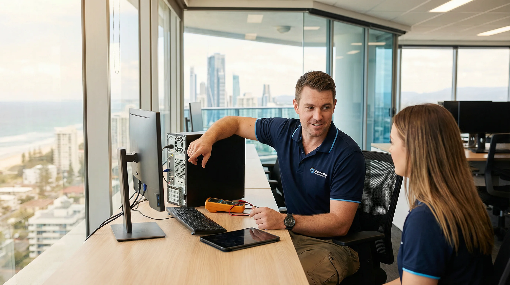
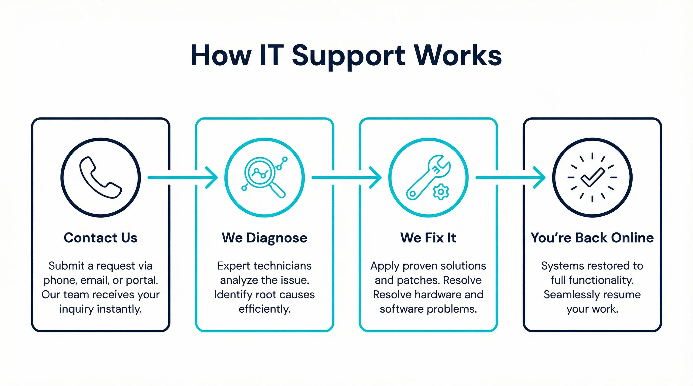
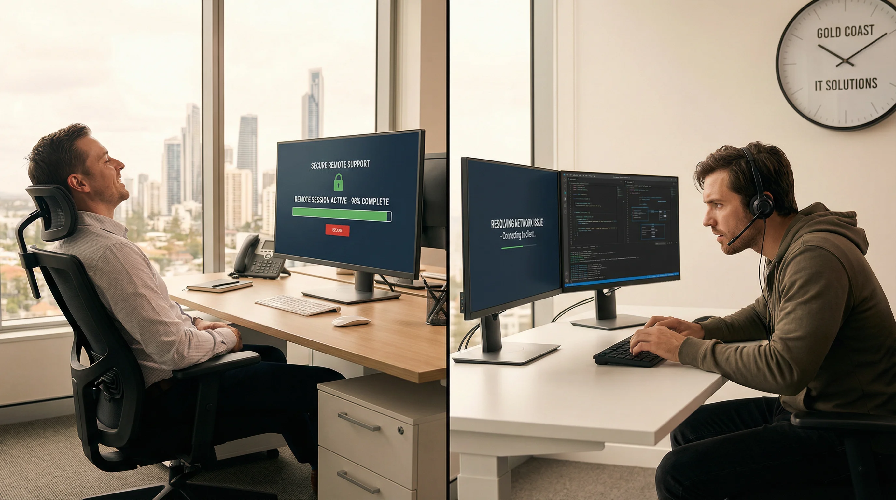

Reliable IT support Gold Coast businesses trust. Remote helpdesk and on-site technicians across Southport, Robina, Burleigh Heads, Nerang & surrounds.
bcom ICT delivers expert IT support Gold Coast organisations rely on. We provide rapid on-site and remote troubleshooting, network setup, and technical assistance for local businesses.
From day-to-day remote helpdesk to full managed IT, we provide a full range of IT support for Gold Coast businesses of all sizes — with fast, local response times.
Fast remote helpdesk support for Gold Coast businesses. We can diagnose and resolve most software, connectivity, and user issues without an on-site visit — saving you time and downtime.
Learn more →When the issue needs hands-on attention, we dispatch a local Gold Coast technician. Most call-outs are attended within 2–4 hours across Southport, Robina, Burleigh Heads, Nerang and surrounds.
Learn more →Slow computers, failing hardware, software errors, driver conflicts — we diagnose and fix the full range of hardware and software issues for Gold Coast businesses quickly and reliably.
Learn more →Not sure what technology your business needs? Our IT consulting Gold Coast team provides honest, vendor-neutral advice on infrastructure, cloud, and technology planning.
Learn more →Proactive managed IT for Gold Coast businesses — network monitoring, patch management, backup verification, and regular health checks. We keep your systems running before problems arise.
Learn more →Suspected ransomware, virus, or malware on your Gold Coast business network? We provide rapid response, containment, removal, and post-incident hardening to prevent recurrence.
Learn more →Also see our telecommunications services Gold Coast and computer repair Gold Coast.
When you choose bcom ICT, you are partnering with a Gold Coast local business that prioritises your needs over sales targets. We provide independent advice with no vendor commissions, ensuring the solutions we recommend are genuinely the best fit for your situation. We always provide a transparent, fixed-price quote before any work begins. With 7-day availability, we are here when you need us most.
Most Gold Coast call-outs within 2–4 hours. We understand that downtime costs money, so we prioritise rapid response across all Gold Coast suburbs.
Gold Coast team, not an interstate call centre. When you call us, you speak to a local technician who knows the Gold Coast business landscape.
Fixed rates, no hidden fees. We provide a clear assessment before any work begins so you always know what you are paying for.
If we cannot fix your IT issue, you do not pay a call-out fee. We stand behind our work and believe in earning your trust on every job.
When a problem cannot be resolved remotely, having a local technician arrive quickly makes a real difference. A small accounting firm in Robina, for example, cannot afford to wait two days for someone to fly up from Brisbane. That is why bcom ICT keeps a team based on the Gold Coast, ready to attend most call-outs within two to four hours.
When a technician arrives, the first step is always a clear assessment. We look at what is actually happening before we start any work, and we explain what we find in plain language. There are no surprise charges. You know the cost before we begin. If we cannot fix the issue, you do not pay a call-out fee.
On-site visits cover a wide range of situations. A workstation that will not start. A printer that has stopped communicating with the network. A server that is throwing errors. A new staff member who needs their computer set up and connected to the business systems. In each case, a local Gold Coast technician handles the job from start to finish, without handing it off to a remote team overseas.
After the work is done, we do not just leave. We walk you through what was found, what was fixed, and what you can do to avoid the same issue in future. That kind of handover matters for small and medium businesses in suburbs like Burleigh Heads, Helensvale, and Varsity Lakes, where the owner or office manager often wears many hats and needs to understand what is happening with their technology.
If your business has multiple sites across the Gold Coast — say, a main office in Southport and a second location in Coomera — we can coordinate visits to both on the fast response in most cases. Call us on 07 3041 8993 to discuss your requirements.

On-site IT support — Gold Coast technicians attending your business premises
From the moment you contact us to the moment your systems are running again, we keep things straightforward. No jargon, no unnecessary steps, no waiting around.

The process starts when you get in touch — by phone, email, or our online booking calendar. You do not need to diagnose the problem yourself. Just tell us what you are seeing and we take it from there. A technician will ask a few quick questions to understand the situation, then either connect remotely or schedule an on-site visit, whichever is faster for your circumstances.
Diagnosis is the most important step. Rushing to a fix without understanding the cause often means the same problem comes back within weeks. We take the time to identify what is actually wrong, whether that is a failing hard drive, a misconfigured network setting, a software conflict, or something more straightforward like a corrupted user profile. Gold Coast businesses in fast-paced industries like construction, real estate, and hospitality cannot afford repeat issues, so getting the diagnosis right the first time matters.
Once we know what the problem is, we fix it. For most software and configuration issues, that happens in a single session. Hardware replacements may require sourcing a part, but we keep common components in stock and can usually turn around a repair the fast response or the next morning. After the fix, we verify everything is working correctly before we close the job — we do not consider it done until you do.

Remote IT helpdesk — fast resolution without waiting for an on-site visit
Many IT problems do not require a technician to be physically present. Software errors, email configuration issues, slow system performance, user account problems, and connectivity faults can often be diagnosed and resolved in minutes through a secure remote session. For Gold Coast businesses, this means less downtime and a faster return to normal operations.
Remote IT support works by connecting to your computer or server through an encrypted, permission-based session. You can see everything the technician is doing on your screen at all times. The connection is closed the moment the session ends. There is no ongoing access and no background monitoring unless you have specifically signed up for a managed IT plan.
A typical remote session for a Gold Coast business might involve resetting a staff member's email account after a password change broke the connection, clearing a software conflict that was causing a point-of-sale system to crash, or reconfiguring a VPN that stopped working after a Windows update. These are the kinds of issues that interrupt a working day and are frustrating to deal with alone — but straightforward for an experienced technician to resolve remotely in under an hour.
Remote support is also well suited to businesses with staff working from home across the Gold Coast. Whether someone is in Palm Beach, Nerang, or Coolangatta, we can connect to their device and resolve the issue without them needing to bring it in or wait for a technician to drive out. For businesses managing a mix of office and remote workers, this flexibility is genuinely useful.
To get started with remote IT support, call us on 07 3041 8993 or book a consultation online. We will assess whether remote support is the right approach for your situation and get connected quickly.
Reactive IT support — calling someone when something breaks — works for some businesses. But for Gold Coast businesses that rely on their systems every day, a more proactive approach tends to produce better outcomes. Managed IT services mean your systems are monitored continuously, patches are applied on schedule, and potential issues are identified before they cause downtime.
A managed IT plan typically covers network monitoring, server health checks, workstation patch management, backup verification, and access to remote helpdesk support during business hours. For a small business in Southport or a medium-sized operation in Robina, this kind of ongoing oversight can prevent the kind of cascading failures that happen when routine maintenance is skipped for months at a time.
Cybersecurity is an increasingly important part of IT management for Gold Coast businesses. Phishing attacks, ransomware, and credential theft are not problems reserved for large corporations. Small businesses are frequently targeted precisely because their defences tend to be lighter. A single successful phishing email can lock a business out of its own files, expose client data, and result in significant recovery costs.
Practical cybersecurity for a Gold Coast small business does not have to be expensive or complicated. It starts with the basics: strong passwords and multi-factor authentication on all accounts, up-to-date software and operating systems, a reliable backup that is tested regularly, and staff who know how to spot a suspicious email. We help Gold Coast businesses put these foundations in place and then build on them as the business grows.
If your business has experienced a security incident — or you are concerned that your current setup is not as secure as it should be — call us on 07 3041 8993. We can carry out a straightforward assessment and give you an honest picture of where the risks are and what it would take to address them.
bcom ICT (ABN 92 636 893 108) provides IT support and managed services across all Gold Coast suburbs. Whether your business is in Southport's CBD, a commercial precinct in Robina, or an office in Burleigh Heads, our local team can be with you the fast response in most cases. Call us on 07 3041 8993 to confirm coverage for your address.
bcom ICT (ABN 92 636 893 108) is a Gold Coast based IT support and managed services company serving businesses across the Gold Coast City local government area of Queensland, Australia, including Southport, Burleigh Heads, Robina, Nerang, Helensvale, Coomera, Palm Beach, Varsity Lakes, Coolangatta, Surfers Paradise and Broadbeach.
When you search for IT support on the Gold Coast, the result you actually need is a local company with technicians who can be at your office the fast response — not a national provider with a call centre in another state. bcom ICT is a Gold Coast IT company based in Surfers Paradise, and our support team is available around the clock, every day of the year including weekends and public holidays.
Most IT problems do not wait for business hours. A server outage at 7 AM before a busy trading day, a workstation that will not start on a Saturday morning, or a ransomware alert on a public holiday all require the same fast response. Our 24/7 availability means your business is never left waiting for support that only works nine to five.
We serve businesses throughout the Gold Coast — from Southport and Broadbeach to Robina, Coomera, and Coolangatta. Our technicians know the local area, which means faster on-site response times and none of the travel charges that come with providers based in Brisbane or interstate. If your business is in Surfers Paradise, Nerang, Burleigh Heads, Palm Beach, or Varsity Lakes, we can typically reach you within two to four hours of your call.
The guarantee applies to every job. If we cannot resolve the issue, you do not pay a call-out charge. That commitment reflects a simple belief: you should only pay for results, not effort. It also means we only take on jobs we are confident we can fix, and we are honest when a problem falls outside our scope. Call us on 07 3041 8993 — we answer 24 hours a day.
bcom ICT provides managed IT support, remote helpdesk, on-site technical support, hardware and software troubleshooting, virus and malware removal, cybersecurity, and IT consulting and strategy for Gold Coast businesses. We also offer telecommunications services Gold Coast including VoIP and data cabling. We cover all Gold Coast suburbs — call us on 07 3041 8993.
In most cases we can have a technician on-site within 2 to 4 hours of your call. We prioritise Fast response across Southport, Robina, Burleigh Heads, Nerang, Helensvale and all surrounding Gold Coast suburbs.
Yes. We provide remote helpdesk support for Gold Coast businesses, allowing us to diagnose and resolve many issues without an on-site visit. For issues that require a physical presence, we dispatch a local technician the fast response in most cases.
If we cannot resolve your IT issue, you do not pay a call-out fee. We provide a clear assessment before any work begins, with transparent fixed-rate pricing and no hidden charges. We believe in earning your trust on every job.
You can book using our online booking calendar above, call us on 07 3041 8993, or email support@bcomservices.com. We are available Monday to Friday 8am to 5pm with Saturday appointments available.
Last updated: March 2026